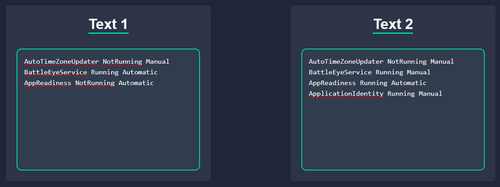
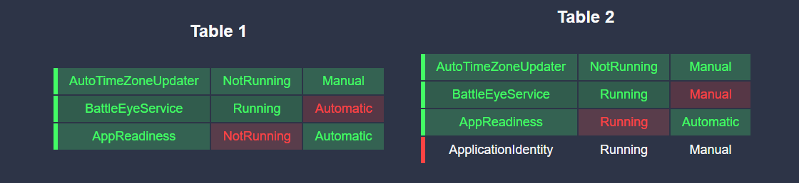

Compare Tables
How to use
How to use
Close
Expected input

Expected output

How to read the output
Cell match
Row match
Cell not match
Row not match
More information →
ss
Succesful
Text 1
Text 2
Check Difference
Clear
Resulted tables
Table 1
Table 2